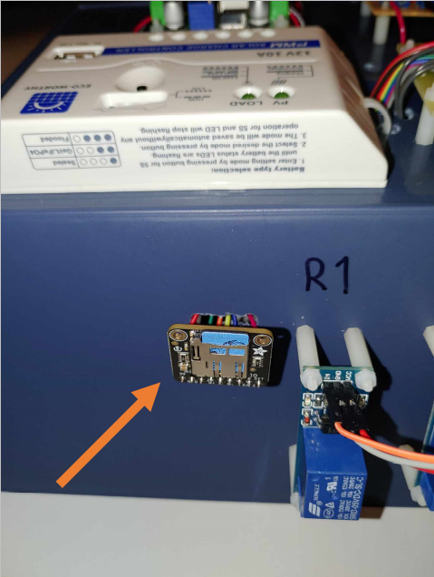
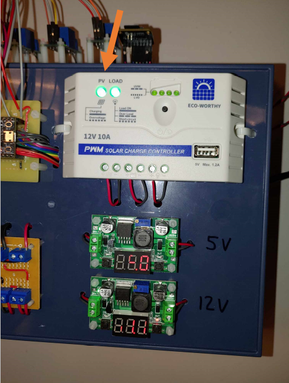
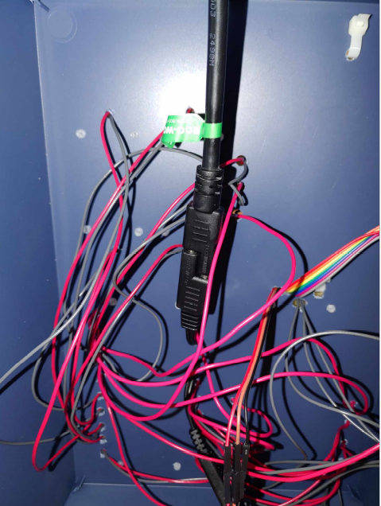
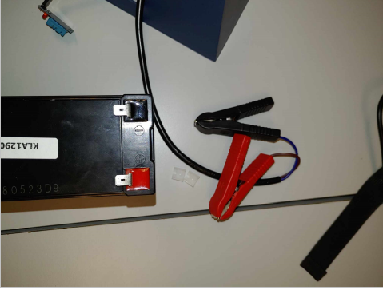
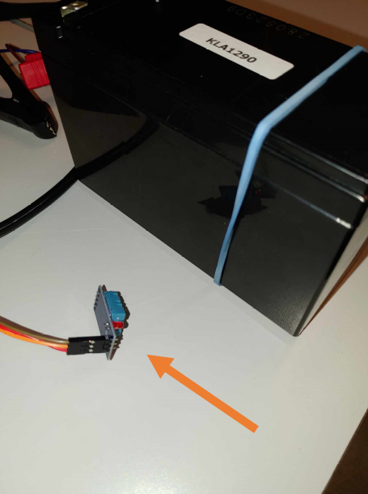
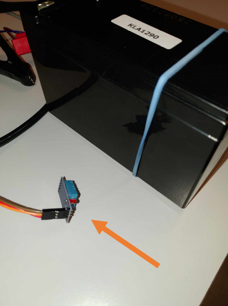

Manuel
SD Card
5 and 12V output

PV and Load indicators
Solar Panel connexion
Battery connexion
Temperature sensor connexion
Connect the sensor to the side of the battery with the elastic band.

Connect the sensor to the side of the battery with the elastic band.
